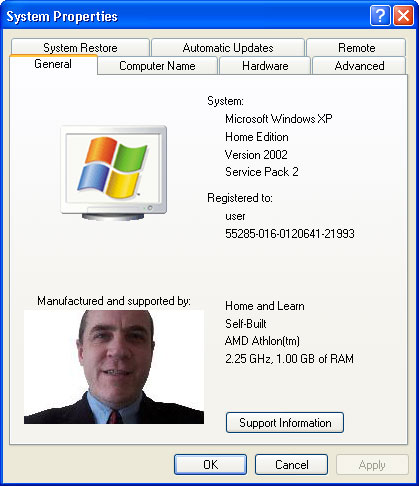
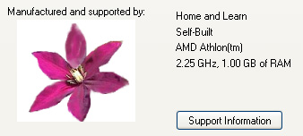

Free
computer Tutorials
|
Free
computer Tutorials
|
|
 home home |
Stay at Home and Learn | ||||
Windows XP System Properties - General Tab
This tutorial assumes that you have set the Control panel to Classic View. To see how to do this, click this link (opens in a new window): Set the Control Panel to Classic View
The System Properties dialogue box gives you information about your PC. There's quite a lot of useful areas here, so we'll go through some of them.
To bring up System Properties, click Start and then Control Panel. From the Control Panel, double click System. Another way to bring up this box is to right click the My Computer on your desktop. From the menu, select Properties. A keyboard shortcut is to hold down the Windows Logo key in the bottom left of your keyboard. Keep it held down and press your Pause/Break key. You should see something like the following:  The first tab of the System Properties box, General, shows you information about your version of Windows. As you can see, this computer is running XP with Service Pack 2 installed. The area at the bottom is just additional information. For the more adventurous amongst you, you change the logo and text below to something of your own. The part you'll be changing is this part: Here's how. Navigate to this folder on your hard drive: C:\WINDOWS\SYSTEM32 Look for a file called oeminfo.ini. Double click this, and it should open up in notepad. Here's what ours looks like: [general]
You don't need any Support Information. But if you only have Line1, then the Support Information button will be unavailable. If you add a Line2, then you'll be able to click the button and see the rest of the text you typed. To change the image to one of your own, you need an image that is no larger than this: width = 180 pixels You can create your own in something like Photoshop or Paint Shop Pro (or even Paint). Then save your work as a BITMAP file (.bmp). But you need to save your work with the following name: oemlogo.bmp Once you're happy with your new logo, copy and paste it to the folder you opened above (C:\WINDOWS\SYSTEM32). Launch the System Properties box again to view your work. Here's another General tab logo we created: 
The image was created using a Tube in Paint Shop Pro. Very easy to do! If you'd like to practice with some Bitmap images we created, then download the images below. Change the name of an image to oemlogo.bmp before you copy and paste to the your SYSTEM32 folder. Download the LOGO Bitmap Images Have fun! <--Back One Page Move on to the Next Part--> |
|||||
|